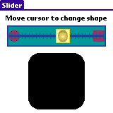

Objective Objective
To design and develop user interface with more advanced objects
such as sliders, progress bar, multiple depth bitmaps...
 Concepts Concepts
Using more sophisticated UI objects
So far, we've only dealt with graphical objects like buttons, labels,
fields, popup lists... At some point, you will need to add more
complex behaviour and user interaction to your application. Palm
OS docs are pretty well structured and contain all the information
you need to do so. However, all this information is spread over
dozens of pages. This topic of our tutorial will provide you with
a "concentrate" of how to develop cool UIs.
Using several forms in the same app
Also, we've only addressed apps that have one main form. Here,
you'll see how to create, load, activate and switch several
forms within your application.
Graphical objects
Here's the overview of those new guys we're going to study:
- FONT: create your own font into
a .txt file and use it to display text on the UI
- FORMBITMAP: how to deal with grayscale
and color images of different depths
- SELECTORTRIGGER: allows you to
tap on a trigger that will pop up a form (like in the DateBook
when you pick an hour)
- STRINGTABLE: define a collection
of strings into the .prc and load it in your app (You're a smart
developer... You don't like hard-wired text, do you?)
- GRAFFITISTATEINDICATOR: this is
what shows the user when s/he taps a dot or a backslash in the
graffiti area, which allows the user to enter special characters
(tap a dot, you'll see a big dot appearing on the screen, and
then tap a space, you'll get a dash and the dot disappears - this
dot was a graffiti state indicator)
- SCROLLBAR: create a scrollbar and
react to the user's tap on the scroll arrows
- SLIDER: this one looks like a cursor
that you slide along a line, just like you do when you raise or
lower the volume on a sound mixer. Use it in your app to adjust
a value graphically.
- PROGRESS BAR: use one when your
app opens up a remote connection or fires any task that takes
enough time to make the user angry if there's no feedback...
- GADGET: that's the magical object.
Basically, it's a rectangular area that you declare as such, and
for which you define and manage the behaviour.
And there's a short list of new clauses that PilRC uses to compile
our .rcp:
- ICONFAMILY: Palm launcher extracts
an ICON resource from each .prc and displays them. You'll then
tap the icon associated to the app you want to run. If you develop
a commercial-grade app, you should take into account that some
of your users have a monochrom display, others have grayscale,
others have 256 colors. If you only create a monochrom ICON, users
who have a cool color display will be a bit unhappy. If you only
create a color ICON, users having a monochrom device will just
get a "black-and-whited" version that will likely not
look very nice. And so forth concerning grayscale. So, you'll
need to create 4 versions of your icon: monochrom, 4-grayscale,
16-grayscale and 256-color.
- SMALLICONFAMILY: in Palm launcher,
you can set preferences to view apps by LIST versus ICON. This
displays a SMALLICON rather than an ICON, and allows to fit more
apps on the display. Just like ICONFAMILY above, this clause allows
you to embed a small icon for each possible color depth.
- VERSION: defines the version of
your app
- LAUNCHERCATEGORY: with this clause,
you can tell hotsync in what category it should install your app
(System, Main, Games...). If the category doesn't exist, it'll
be created automagically. Please note that all the apps of our
tutorial will be installed in category 'Tutorial' (logical - huh?!?)
 Exercise Exercise
Download the ZIP file.
In ui.h:
- define constants for the selector: SelectorDay, SelectorTime,
SelectorStartEnd
- define three string tables:
#define StringTableArdipithecusStr 1403
#define StringTableAustralopithecusStr 1404
#define StringTableHomoStr 1405
- define three objects for our scroll bar: ScrollField, ScrollBar,
ScrollStr
- define some values for the slider: SliderSlider=1701, SliderThumb=1702,
SliderBackground=1703, SliderMax=40
- add the dimensions of the gadget:
#define GadgetWidth 40
#define GadgetHeight 40
- define a Font and FontID for the reverse and smiley fonts the
same way the FunFont was defined
In ui.rcp:
- add reverse and smiley fonts
- add BITMAPGREY16...
- add BITMAPFAMILY... for the slider's
thumb
- add StringTableAustralopithecusStr
with values "A. " "anamensis
-4.2M" "afarensis -3.9M" "africanus -3.2M"
"boisei -2.1M" "robustus -2M"
- in FontForm, add FONT SmileyFontID
where appropriate
- in BitmapForm, add Grey16Bitmap
and Color256Bitmap where they should
appear
- in SelectorForm, add a selector for time
- in GraffitiForm, place a GRAFFITISTATEINDICATOR
at... the right place :)
- in ScrollForm, insert a SCROLLBAR
whose ID is ScrollBar, position is (previous_right+7 previous_top
7 previous_height), value and min are 0, max is 7 and pagesize
equals 1
- in SliderForm, add a beautiful slider like this:
SLIDER ID SliderSlider AT (10 PREVBOTTOM+4
140 30) FEEDBACK THUMBID SliderThumb BACKGROUNDID SliderBackground
VALUE 0 MIN 0 MAX SliderMax PAGESIZE 1
- in GadgetForm, create a GADGET with
GadgetGadget as an ID, x=CENTER, y=90, width=GadgetWidth, height=GadgetHeight).
And oh yes! It should be USABLE.
In ui.c:
- declare 3 font handles: MemHandle funFontH,
reverseFontH, smileyFontH;
- declare a pointer to our progress indicator: ProgressPtr
prg = NULL;
- in BitmapFormHandleEvent() add this code to display 16K-color
bitmaps only if OS version >= 4:
FormPtr frm = FrmGetActiveForm();
UInt16 obj = FrmGetObjectIndex(frm, Color16KBitmap);
FrmRemoveObject(&frm, obj);
frm = FrmGetActiveForm(); // refresh pointer that may have changed
after FrmRemoveObject
FrmNewLabel(&frm, Color16KBitmap, "Need OS4+", 110,
115, 0);
- in SelectorFormHandleEvent()/case SelectorTime, add this to
assign a default time:
DateTimeType dt;
TimSecondsToDateTime(TimGetSeconds(), &dt); //get today date
hour = dt.hour;
minute = dt.minute;
- and that to get what time the user selected:
char str[40];
TimeToAscii(hour, minute, PrefGetPreference(prefTimeFormat), str);
SetSelector(SelectorForm, SelectorTime, str);
- in DisplayStringTable(), add this two-pass chunk to load the
strings from the table:
for (count = 0; true; count++) //
pass 1: let's count # of strings
if (StrLen(SysStringByIndex(strTbl, count,
str, sizeof(str))) <= 3) // only got prefix?
break; // exit loop
for (i = 0; i < count; i++) //
pass 2: letz get'em stringz!
{
SysStringByIndex(strTbl, i, str, sizeof(str));
WinDrawChars(str, StrLen(str), 10, (64 - 10 + ((i+1)*(96
/ (count+1)))));
}
- in ScrollFormHandleEvent(), draw a rectangle around the table,
to make it look nicer:
WinDrawGrayRectangleFrame(simpleFrame, &rectField);
WinDrawGrayRectangleFrame(simpleFrame, &rectBar);
- upon receiving a sclRepeatEvent, do this:
UInt16 newValue = event->data.sclRepeat.newValue;
FormPtr frm = FrmGetActiveForm();
FieldPtr fld = (FieldPtr)FrmGetObjectPtr(frm, FrmGetObjectIndex(frm,
ScrollField));
static UInt16 curValue = 0;
if (newValue > curValue)
FldScrollField(fld, newValue-curValue, winDown);
else FldScrollField(fld, curValue-newValue,
winUp);
curValue = newValue;
- in SliderFormHandleEvent(), upon ctlRepeatEvent, you need to
refresh the shape of our figure:
UInt16 newValue = event->data.ctlRepeat.value;
if (newValue != curValue)
{
DrawShape(curValue, newValue);
curValue = newValue;
}
- in ProgressCallback(), make sure you copy "Finishing" as a string
(refer to "case 0")
- in ProgressFormHandleEvent()/case ProgressSlow, start progress
dialog for slow process:
count = 0;
max = 0x0012;
StrCopy(fileSize, "huge");
if ((prg = PrgStartDialog("Slow Task", &ProgressCallback,
(void*)fileSize)) == NULL)
FrmCustomAlert(ErrorAlert, "Unable to start
progress dialog", "", "");
- in DrawGadget() here's the code that reverse from down to up:
IndexedColorType textColor = WinSetTextColor(UIColorGetTableEntryIndex(UIFormFrame));
IndexedColorType backColor = WinSetBackColor(UIColorGetTableEntryIndex(UIFormFill));
WinDrawChars("Empty :(", 8, rect->topLeft.x+2, rect->topLeft.y+rect->extent.y-14);
WinSetTextColor(textColor);
WinSetTextColor(backColor);
up = !up;
- in AppHandleEvent(), you need to add some code in the case of
nilEvent. Stop the progress dialog:
PrgStopDialog(prg, false);
prg = NULL;
- or update it:
PrgUpdateDialog(prg, 0, stage, dots, true);
- in AppStart(), get a handle on our home-made "smiley"
font
Make the app and test it!
 Solution Solution
Here's the ZIP file.
And here's how the app should like:

Next topic 
|